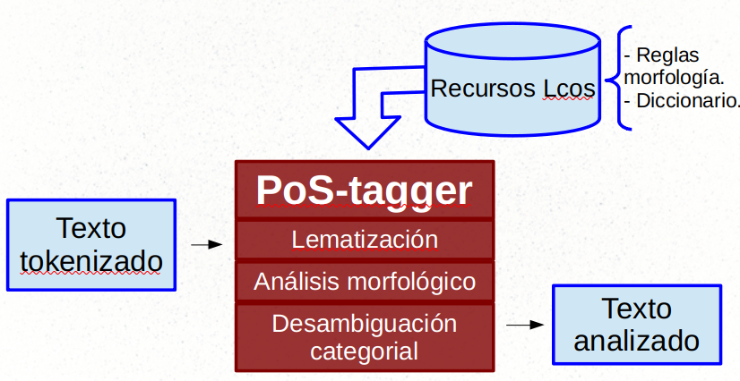
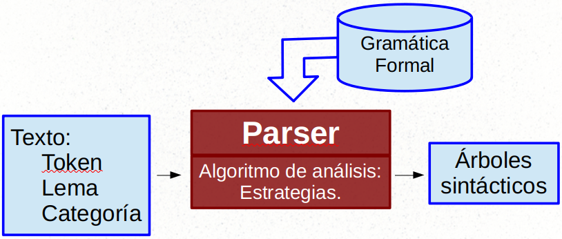
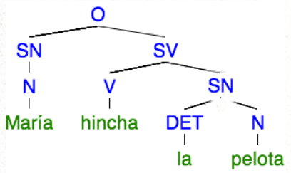
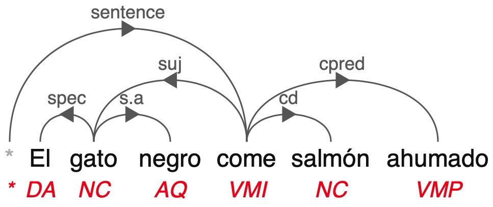
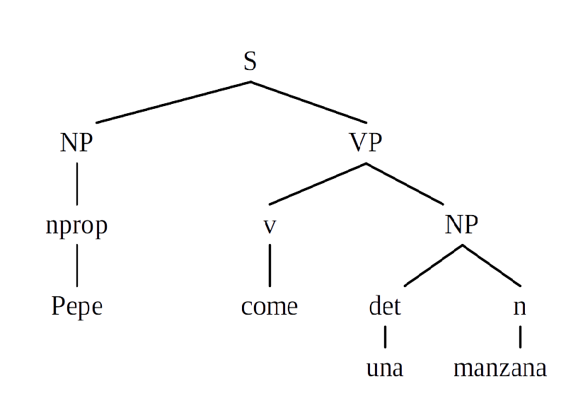
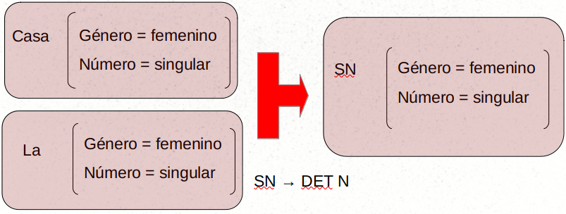

Análisis categorial y sintáctico
Contents
3. Análisis categorial y sintáctico#
Nota
Para preparar este tema, consulta los capítulos 12, 13 y 14 de Juravsky y Martin (2022) Speech and Language Processing. https://web.stanford.edu/~jurafsky/slp3/.
3.1. Unidades de comunicación básica. La palabra. Type, token y lema.#
Si bien el concepto de “palabra” se suele utilizar como unidad mínima y básica de comunicación, realmente desde la palabra no tiene en lingüística una definición clara: es un concepto vago muy difícil de delimitar.
En lingüística de corpus, lingüística computacional y procesamiento del lenguaje natural, más que con el concepto de “palabra”, se trabaja con los conceptos de type (“tipo”) y token (“caso”) (introducidos por el filósofo Charles S. Peirce a principio de siglo XX):
Type es la palabra entendida como clase o tipo. Una secuencia de caracteres diferente de cualquier otra secuencia.
Token es cada una de las instancias o casos concretos de esas clase type que se pueda hallar en un texto 1.
Se suele ejemplificar la diferencia entre ambos conceptos con el verso de G. Stein:
“Rose is a rose is a rose is a rose”;
pero para españolizarlo un poco vamos a coger como ejemplo el siguiente verso de esta canción de Mecano, que es una versión simplificada del verso de Stein:
“Una rosa es una rosa es” 2
En este verso encontramos tres types:
“una”
“rosa”
“es”;
pero seis tokens: 2 tokens del type “una”, 2 del type “rosa” y 2 del type “es”. Son por tanto \(2+2+2 = 6\) tokens. Este texto está formado por seis tokens y tres types.
Como se puede comprobar, esta diferencia es la base conceptual del cálculo de frecuencias textuales. El cálculo más simple es contar, como se ha hecho antes, la cantidad de tokens de cada type en un texto:
type |
tokens |
|---|---|
una |
\(2\) |
rosa |
\(2\) |
es |
\(2\) |
En esta línea, el tamaño de un corpus siempre se mide en cantidad de tokens.
3.1.1. Tokenización#
El primer paso a la hora de procesar un texto es, por tanto, hallar los tokens y, con ello, los types que forman el texto. A este proceso se le denomina tokenización.
El método de tokenización más simple es separar cada token por espacio en blaco. Token quedaría así definido como la secunencia de caracteres separada por un espacio en blanco. Desde un punto de vista lingüístico, esta aproximación presenta algunas limitaciones:
signos de puntuación,
unidades multipalabra (como formas complejas del verbo Ej. “he comido”) o
contracciones (“del”, “al”) y en general formas aglutinantes (“dáselo”).
Necesidad de modelos más sofisticados.
3.1.2. Lematización y stemming#
Type y token se refieren siempre a formas flexionadas, es decir, a formas con variaciones morfológicas. Así, “catamos” y “cantaré” son tokens distintos; al igual que “casa” y “casas”.
Para agrupar todos los tokens relacionados con la misma palabra (es decir, la forma sin flexionar o la unidad léxica que podemos encontrar, por ejemplo, en los diccionarios) se realiza un proceso de lematización. La lematización es asignar a cada palabra su forma no marcada: infinitivo para verbos, forma masculino singular para nombres y verbos (es decir, la forma que aparece en el diccionario). El lema es una manera de nombrar la palabra en toda su diversidad flexiva.
La lematización es un fenómenos complejo porque es necesario analizar morfológicamente la palabra para determinar su lema. Ej. El lema del token “traje” puede ser “traer” (si es verbo) o “traje” (si es nombre).
Un proceso similar pero más sencillo es el stemming: reducir cada token a su raíz o lexema (la parte invarible que, en principio, asume el significado general de la palabra).
Reflexión: para minería de textos, ¿qué es mejor, dejar el corpus con los tokens, lematizarlo o trabajar solo con las raíces léxicas (stemm)?
3.2. Análisis morfológico y categorial.#
El objetivo general de la anotación categorial (PoS Tagger): asignar a cada palabra de un texto su categoría gramatical correspondiente. En concreto, a cada token del texto (incluidos signos de puntuación, etc) se le asigna:
lema,
categoría gramatical,
rasgos morfológicos.
El mayor problema viene en la selección de la categoría gramatical por los problemas de ambigüedad categorial que vimos en la sesión anterior.
3.2.1. Fundamentos lingüísticos (a modo de recordatorio).#
Categorías gramaticales: agrupaciones de palabras (“paradigmas”) según sus rasgos distributivos, morfológicos y (en menor medida) semánticos.
ESP: determinantes (artículo, demostrativos, etc.), sustantivos, adjetivos, pronombres, verbos, adverbios, preposiciones, conjunciones e interjecciones.
Por su función en el texto: categorías con significado léxico vs. “significado” gramatical (solo aportan información gramatical).
Por su flexión: variables e invariables.
Categorías abiertas vs cerradas.
3.2.2. Importancia en Minería de textos#
Base para análisis sintáctico y semántico.
Un pre-proceso muy común en Minería de Textos es eliminar las “stop-words”, es decir, las palabras de categorías gramaticales sin significado semántico (artículos, preposiciones, conjunciones, etc.). En ocasiones además las palabras se lematizan. En ambos casos es necesario un análisis categorial (aunque sea un simple filtro de “stop-words”). Algunas aplicaciones dependen de las categorías gramaticales, como:
extracción de entidades –> nombres propios;
extracción de eventos –> verbos y nombres;
extracción de sentimientos –> adjetivos;
detección de autoría –> categorías cerradas;
etc.
3.2.3. Representación de la información morfológica y categorial#
La información categorial y morfológica se representa explícitamente mediante etiquetas.
Actualmente hay diversas propuestas. Es necesario saber con qué juego de etiquetas representa la información el sistema de PoS que estemos utilizando par poder interpretar la información correctamente.
Algunas propuestas:
Penn Treebank tag set:
https://www.cs.upc.edu/~nlp/SVMTool/PennTreebank.html
EAGLES tag set:
http://www.ilc.cnr.it/EAGLES96/annotate/annotate.html
http://blade10.cs.upc.edu/freeling-old/doc/tagsets/tagset-es.html
https://freeling-user-manual.readthedocs.io/en/latest/tagsets/
Universal tagset (Universal dependencies project):
3.2.4. Arquitectura de un PoS_tagger. Algoritmos clásicos de desambiguación.#

Ejemplo: Freeling.
3.2.5. Algoritmos de desambiguación categorial (aproximación histórica)#
3.2.5.1. Modelo de reglas simples.#
Sistema TAGGIT (1950). 71 etiquetas + 3300 reglas. 77% de precisión.
Reglas: expresiones regulares tipo
\b.*ing\b = Verbo Infinitivo
\b.*mente\b = adverbio
las\s[a-z]*as → Nombre femenino plural
etc.
3.2.6. Modelo estadístico: cadena de markov.#
Tiene en cuenta el contexto de aparición de las palabras. Basados en bigramas.
Calculan dos tipos de probabilidades: Léxica: p(W|T) Contextual: p(W|T|Ctx)
ctx = palabra anterior –> bigrama.
3.2.7. Modelo oculto de Markov#
Basado en la probabilidad de cadenas de etiquetas (cadena oculta).
Dos tipos de probabilidades:
Probabilidad de emisión = p(W|T)
Probabilidad de transmisión = p(T|T-1). Esta es la parte oculta.
Así, la probabilidad final queda como:
p(W|T) = p(W|T) * p(T|T-1)
Proceso iterativo: primero analiza lo no ambiguo, luego hace una segunda vuelta calculando probabilidades de transición y re-anotando, hasta llegar a situación estable (fin).
3.2.8. Gramáticas de restricciones (Constraint grammar)#
Modelo teórico: este tipo de gramáticas no dice cómo es un idioma, sino cómo NO es.
Las reglas, por tanto, son reglas negativas. Dada una ambigüedad, las reglas indican cuál de las opciones seguro que no es. Combinando restricciones se llega al final a la solución correcta.
Las reglas son condicionales al contexto (si la palabra anterior es X, la siguiente NO es Y).
Ejemplo: “Un verbo no va precedido de artículo”.
Sistema ENGCG de 1990 (Karlsson et al 1995)
3.2.9. Modelos basados en aprendizaje automático.#
Sistemas supervisados. Aprendizaje a partir de un corpsu anotado a mano y validado por lingüistas.
Diferentes algoritmos: árboles de decisión, vectores de soporte (SVM), etc.
Ejemplo “Transformation-based Tagger” (Brill 1995). Proceso iterativo donde va aprendiendo reglas, cada vez más específicas. Analiza aplicando primero las específicas y luego las generales. Refinamiento: revisón manual de cada iteración.
3.2.10. Situación actual#
Aproximaciones multilingües basadas en embeddings y redes neuronales:
3.2.11. Recursos.#
Cualquier sistema de PLN parte de un PoS tagger. Es el análisis básico.
SpaCy: https://spacy.io/
NLTK: http://www.nltk.org/
Standford CORE NLP: https://stanfordnlp.github.io/CoreNLP/
Google CLOUD: https://cloud.google.com/natural-language/
y muchos más
3.3. Análisis sintáctico.#
Sintaxis: agrupación y relaciones de las palabras dentro de una oración.
Análisis automático: parser
3.3.1. Arquitectura estándar de un parser#

3.3.2. Modelos de representación#
Análisis basado en constituyentes

Análisis basado en dependencias

(Créditos de la imagen aquí)
3.3.3. Principal problema computacional#
Ambigüedad estructural:
"Ayer vi a tu hermano con los prismáticos"
Ambigüedad coordinación:
"Sirve los platos y los cubiertos limpios"
3.3.4. Gramáticas formales#
Conjunto de reglas formales de análisis sintático.
3.3.4.1. Context free grammars#
G = (NT, T, S, P)
NT: {no terminales},
T: {terminales},
S: Símbolo inicial
P: Reglas de producción A -> w:
A NT
W (NT U T)*
Tal que
NT ={S,NP,VP,nprop,n,v,det},
T ={Pepe,manzana, come,una},
P:
S -> NP VP
NP -> nprop
NP -> det n
VP -> v
VP -> v NP

Estas gramáticas eran muy limitadas y fueron ampliadas con estructuras de rasgos y técnicas de unificación.

En lingüística se han desarrollado diferentes modelos basados en estas técnicas las Head-driven phrase structure grammar o las Lexical-Functional Grammar (que sigue siendo un modelo válido: https://ling.sprachwiss.uni-konstanz.de/pages/home/lfg/ )
3.3.4.2. Probabilistic Context Free Grammar y modelos probabilísticos#
Añaden peso estadístico a cada regla.
SV → V SP SP (0.5)
SV → V SP (0.3)
SV → V (0.2)
Modelos de aprendizaje automático.
Corpus de aprendizaje y evaluación: treebanks
Penn Treebank:
Ancora (español, catalán):
Y muchos otros
3.3.5. Chunkers#
En ocasiones el análisis sintáctico completo (full parsing) es complejo, consume mucho recurso y no suele obtener buenos resultados.
Lo normal es realizar análisis sintáctico parcial o chunkers: extraer agrupaciones sintáticas (chunks) sin llegar a derivar el árbol sintáctico completo (Abney 1991).
3.3.6. Estrategias#
Descendente: Recursive Descendent:
(El siguiente código es Python y requiere tener instalado NLTK)
import nltk
nltk.app.rdparser()
Ascendente Shift Reduce:
import nltk
nltk.app.srparser()
3.3.7. Formato CONLL#
Formato de salida estándar en análisis de dependencias. Además de la información morfológica, por cada palabra indica de quién depende y el tipo de dependencia.
Salida CoNLL-U
# sent_id = 1
# text = Los hombres que fuman puro tienen cara de canguro .
1 Los el DET DET Definite=Def|Gender=Masc|Number=Plur|PronType=Art 2 det _ _
2 hombres hombre NOUN NOUN Gender=Masc|Number=Plur 6 nsubj _ _
3 que que PRON PRON PronType=Int,Rel 4 nsubj _ _
4 fuman fumar VERB VERB Mood=Ind|Number=Plur|Person=3|Tense=Pres|VerbForm=Fin 2 acl _ _
5 puro puro ADJ ADJ Gender=Masc|Number=Sing 4 obj _ _
6 tienen tener VERB VERB Mood=Ind|Number=Plur|Person=3|Tense=Pres|VerbForm=Fin 0 root _ _
7 cara cara NOUN NOUN Gender=Fem|Number=Sing 6 obj _ _
8 de de ADP ADP _ 9 case _ _
9 canguro canguro NOUN NOUN Gender=Masc|Number=Sing 7 nmod _ _
10 . . PUNCT PUNCT PunctType=Peri 6 punct _ _
3.3.8. Situación actual#
Transition-based dependency parsing (Nivre 2014). Algoritmo shift-reduce.
Neural Network Dependency Parser: https://nlp.stanford.edu/software/nndep.shtml
Modelo de dependencias universal: Universal Dependencies:
The Universal Dependencies project (Nivre et al., 2016) provides an inventory of dependency relations that arelinguistically motivated, computationally useful, and cross-linguistically applicable. (Juravsky y Martin 2020, cap. 14)
Representación vectorial (embeddings).
3.3.9. Herramientas#
SpaCy: https://spacy.io/
Freeling: https://nlp.lsi.upc.edu/freeling/node/1
UD-Pipe: https://ufal.mff.cuni.cz/udpipe
3.4. Bibliografía#
Abney S.P. (1991) “Parsing By Chunks”. In: Berwick R.C., Abney S.P., Tenny C. (eds) Principle-Based Parsing. Studies in Linguistics and Philosophy, vol 44. Springer, Dordrecht. https://doi.org/10.1007/978-94-011-3474-3_10
Juravsky y Martin (2020) Speech and Language Processing. https://web.stanford.edu/~jurafsky/slp3/
Karlsson, F., A. Voutilainen, J. Heikkilä, and A. Anttila (eds.). 1995. Constraint Grammar. A language-independent system for parsing unrestricted text. Berlin and New-York: Mouton de Gruyter
- 1
“Token” se asimila en este caso a “occurrence”. Cfr. https://plato.stanford.edu/entries/types-tokens/#Occ
- 2
Este verso es una adaptación del verso de Gertrude Stein “A rose is a rose is a rose”. Ver https://es.wikipedia.org/wiki/Rosa_es_una_rosa_es_una_rosa_es_una_rosa.